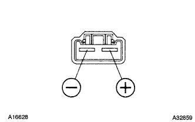

フューエル ポンプ（1NZ-FE(4WD)） 単体点検
印刷
準備品一覧
1. フューエル ポンプ

抵抗点検
SST(トヨタエレクトリカルテスタ－)を使用して、端子間の抵抗を測定する。
SST
09082-00030
09083-00170
参考値
0.2-3.0Ω(20°C)
作動点検
端子間にバッテリ電圧をかけ、モータが回転することを確認する。
■ 注 意 ■
点検は短時間(10秒以下)で行う。
ポンプはバッテリからできるだけ離す。
スイッチングは必ずバッテリのターミナル側で行う。